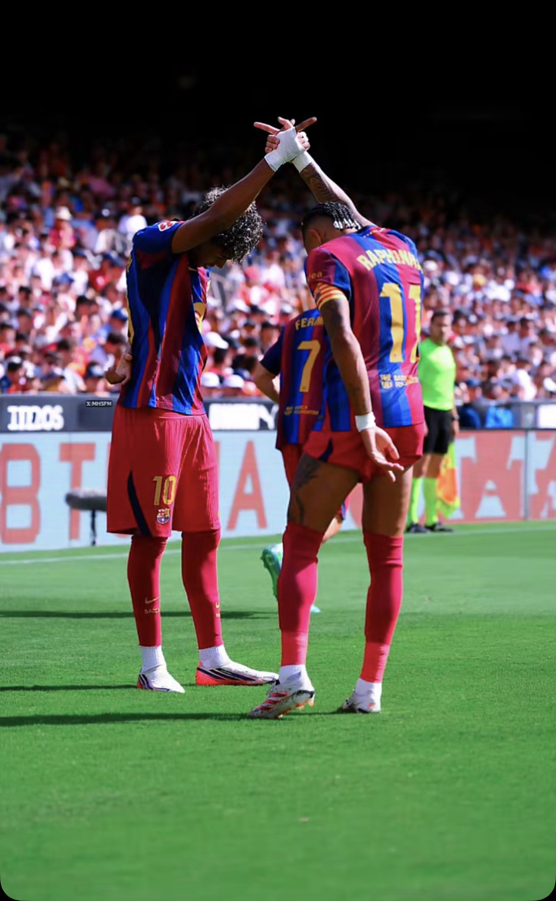

Âgé de 21 ans, je suis en cours de formation pour me spécialiser dans les systèmes et réseaux. Passionné par les dangers d'Internet, je suis particulièrement intéressé par le secteur de la cybersécurité.
📄 Mon CV
Formation actuelle : BTS SIO option SISR (Solutions d'Infrastructure, Systèmes et Réseaux), 1re année, à distance via le CNED.
Bienvenue sur mon portfolio !
Je suis actuellement en première année de BTS SIO option SISR. Cette formation me permet d'acquérir des bases solides dans de nombreux domaines informatiques, le plus passionnant pour mon parcours étant l'administration des systèmes et des réseaux informatiques.
Objectif & Orientation :
Après l'obtention de mon diplôme, j'aspire à poursuivre mes études vers une licence informatique afin de renforcer mes compétences, puis d'intégrer une école d'ingénieur spécialisée en cybersécurité. Mon objectif final est d'évoluer vers les métiers de la sécurité informatique.
Je recherche un stage de 4 à 5 semaines dans le domaine de l'administration systèmes et réseaux, à réaliser entre mai et août 2027.
Évaluation et certification des compétences numériques (Sécurité numérique, gestion de données, traitement de l'information et collaboration en ligne).
80%
60%
70%
40%
Inventaire matériel et logiciel d'une organisation. Création de groupes statiques et dynamiques. Configuration de partage de fichiers et de niveaux d'habilitation.
Création de VM. Ajout d'ordinateurs dans Active Directory. Prise en charge de pannes matérielles/logicielles. Gestion des comptes et autorisations NTFS.
Installation d'un environnement de développement Web complet et d'un environnement de tests pour une application Web.
Configuration des équipements réseaux, adressage IP, routage, sous-réseaux, DHCP, VLAN, Wi-Fi. Maquettage d'infrastructure.
Administration à distance, automatisation de gestion de fichiers/groupes avec PowerShell, planification de tâches sous Linux avec cron.
Prototyper l'infrastructure réseau. Sauvegarder les postes de travail. Gérer le déploiement de l'image système et le clonage des postes.
Projet qui sera réalisé durant le stage de première année de BTS SIO.
Dans le domaine des systèmes et réseaux, la sécurité évolue constamment. Ma veille technologique me permet de suivre en temps réel les nouvelles vulnérabilités découvertes, les correctifs de sécurité publiés par les éditeurs (Microsoft, Linux, Cisco) ainsi que les meilleures pratiques de défense des infrastructures.
N'hésitez pas à me contacter pour toute proposition de stage ou d'information complémentaire.